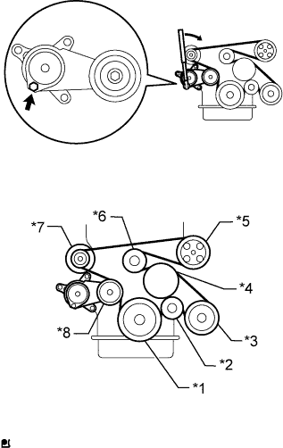

КОМПРЕССОР (для моделей с 2TR-FE) > УСТАНОВКА |
| 1. ОТРЕГУЛИРУЙТЕ УРОВЕНЬ КОМПРЕССОРНОГО МАСЛА |
В случае замены компрессора и электромагнитной муфты новыми постепенно выпустите газообразный хладагент через рабочий клапан и слейте указанное ниже количество масла из новых компрессора и электромагнитной муфты перед установкой.
| 2. УСТАНОВИТЕ КОМПРЕССОР СИСТЕМЫ КОНДИЦИОНИРОВАНИЯ В СБОРЕ |
 |
Установите компрессор, закрепите его 4 болтами и затяните их в последовательности, указанной на рисунке.
Подсоедините разъем.
| 3. УСТАНОВИТЕ ШЛАНГ НИЗКОГО ДАВЛЕНИЯ В СБОРЕ |
Снимите с трубопровода виниловую ленту.
Нанесите необходимое количество компрессорного масла на новое кольцевое уплотнение и пригоночную поверхность компрессора.
Установите кольцевое уплотнение на трубопровод низкого давления.
Подсоедините трубопровод низкого давления и закрепите его болтом.
| 4. УСТАНОВИТЕ ТРУБОПРОВОД ВЫСОКОГО ДАВЛЕНИЯ В СБОРЕ |
Снимите с трубопровода виниловую ленту.
Нанесите необходимое количество компрессорного масла на новое кольцевое уплотнение и пригоночную поверхность компрессора.
Установите кольцевое уплотнение на трубопровод высокого давления.
Подсоедините трубопровод высокого давления и закрепите его болтом.
| 5. УСТАНОВИТЕ ЛОПАСТНОЙ НАСОС В СБОРЕ |
Закрепите лопастной насос 2 болтами.
Подсоедините 2 разъема.
Установите нагнетательную трубку с помощью болта.
| 6. УСТАНОВИТЕ КОЖУХ ВЕНТИЛЯТОРА |
Установите шкив вентилятора на насос системы охлаждения.
Поместите кожух вместе с вентилятором вискомуфты между радиатором и двигателем.
Установите вентилятор вискомуфты на насос системы охлаждения и предварительно закрепите его 4 гайками. Затяните гайки вручную до упора.
 |
Присоедините захваты кожуха к радиатору, как показано на рисунке.
Закрепите кожух 2 болтами.
Установите поликлиновой ремень вентилятора и генератора (Нажмите здесь).
Затяните 4 гайки вентилятора вискомуфты.
 |
Введите в зацепление захват, чтобы сомкнуть зажим гибкого шланга, как показано на рисунке.
| 7. УСТАНОВИТЕ ПАТРУБОК РАДИАТОРА № 2 |
Подсоедините патрубок радиатора № 2 к радиатору.
| *a | Верх |
| *b | Левая сторона |
| *1 | Метка, нанесенная краской |
| 8. УСТАНОВИТЕ ПАТРУБОК РАДИАТОРА № 1 |
Подсоедините патрубок радиатора № 1 к радиатору.
| *a | Верх |
| *b | Правая сторона |
| *1 | Метка, нанесенная краской |
| 9. УСТАНОВИТЕ РАСШИРИТЕЛЬНЫЙ БАЧОК РАДИАТОРА |
Установите расширительный бачок радиатора и закрепите его 3 болтами.
Подсоедините шланг бачка к радиатору.
| 10. УСТАНОВИТЕ ПОЛИКЛИНОВОЙ РЕМЕНЬ ВЕНТИЛЯТОРА И ГЕНЕРАТОРА |
|  |
Установите поликлиновой ремень на все шкивы, кроме шкива натяжителя приводного ремня.
| *1 | Шкив коленчатого вала |
| *2 | Опорный ролик |
| *3 | Компрессор системы кондиционирования |
| *4 | Шкив вентилятора |
| *5 | Лопастной насос |
| *6 | Опорный шкив № 1 |
| *7 | Генератор |
| *8 | Натяжитель ремня |
С помощью шестигранника, указанного на рисунке стрелкой, сдвиньте шкив натяжителя вниз, а затем установите поликлиновой ремень на шкив натяжителя.
| 11. УСТАНОВИТЕ ЗАЩИТУ КАРТЕРА ДВИГАТЕЛЯ № 1 В СБОРЕ |
 |
Присоедините защиту картера двигателя к кузову автомобиля, как показано на рисунке.
Вверните 4 болта.
| 12. УСТАНОВИТЕ НИЖНЮЮ НАКЛАДКУ ПЕРЕДНЕГО БАМПЕРА |
Установите нижнюю облицовку переднего бампера и закрепите ее 5 болтами и фиксатором.
| 13. ЗАПРАВЬТЕ ХЛАДАГЕНТ |
Используя вакуумный насос, выполните вакуумную очистку.
Заправьте хладагент HFC-134a (R134a).
| Код модели | Тип системы кондиционирования | Блок охлаждения | Заправочный объем хладагента |
| Кроме моделей, перечисленных ниже | Для моделей без заднего кондиционера | Для моделей с холодильной камерой | 600 +/-30 г (21,2 +/-1,1 унции) |
| Для моделей без холодильной камеры | 550 +/-30 г (19,3 +/-1,1 унции) | ||
| Для моделей с задним кондиционером | Для моделей с холодильной камерой | 800 +/-30 г (28,2 +/-1,1 унции) | |
| Для моделей без холодильной камеры | 770 +/-30 г (27,2 +/-1,1 унции) | ||
| Для моделей с задним кондиционером Для моделей, предназначенных для эксплуатации в холодном климате | Для моделей без холодильной камеры | 720 +/-30 г (25,3 +/-1,1 унции) | |
| TRJ150L-GKMEKV TRJ150L-GKPEKV TRJ155L-GJPEKV GRJ150L-GKFEKV GRJ150L-GKAEKV KDJ150L-GKFEYV KDJ150L-GKAEYV | Для моделей без заднего кондиционера | Для моделей с холодильной камерой | 600 +/-30 г (21,2 +/-1,1 унции) |
| Для моделей без холодильной камеры | 550 +/-30 г (19,3 +/-1,1 унции) или 600 +/-30 г (21,2 +/- 1,1 унции) *1 | ||
| Для моделей с задним кондиционером | Для моделей с холодильной камерой | 800 +/-30 г (28,2 +/-1,1 унции) | |
| Для моделей без холодильной камеры | 770 +/-30 г (27,2 +/-1,1 унции) |

| 14. ДОБАВЬТЕ ОХЛАЖДАЮЩУЮ ЖИДКОСТЬ ДВИГАТЕЛЯ |
Затяните пробку сливного крана блока цилиндров.
Затяните пробку сливного крана радиатора вручную.
Отсоедините 2 виниловых шланга.
Долейте охлаждающую жидкость.
| Параметр / Устройство | Заданные условия | |
| для моделей с автоматической трансмиссией | Для моделей без заднего подогревателя | 8,1 литра (8,6 кварты США, 7,1 английской кварты) |
| Для моделей с задним подогревателем | 9,9 литра (10,5 кварты США, 8,7 английской кварты) | |
| для моделей с механической трансмиссией | Для моделей без заднего подогревателя | 8,3 литра (8,8 кварты США, 7,3 английской кварты) |
| Для моделей с задним подогревателем | 10,1 литра (10,7 кварты США, 8,9 английской кварты) | |
Медленно налейте охлаждающую жидкость в расширительный бачок радиатора до отметки "F".
Установите пробку расширительного бачка.
Установите на место пробку радиатора.*1
Запустите двигатель и сразу же остановите его.*2
Подождите примерно 10 с. Затем снимите пробку радиатора и проверьте уровень охлаждающей жидкости. Если уровень охлаждающей жидкости снизился, добавьте охлаждающую жидкость.*3
Повторяйте шаги *1, *2 и *3 до тех пор, пока уровень охлаждающей жидкости не снизится.
Установите на место пробку радиатора.*4
Настройте систему кондиционирования, как описано ниже.*5
| Параметр / Устройство | Условие |
| Скорость вентилятора | Любая настройка, кроме OFF (ВЫКЛ) |
| Температура | В сторону "WARM" |
| Переключатель системы кондиционирования | Выкл |
Запустите двигатель, прогрейте его настолько, чтобы открылся термостат, а затем дайте поработать в таком состоянии несколько минут, чтобы прокачать охлаждающую жидкость.*6
Остановите двигатель и подождите, пока охлаждающая жидкость не охладиться до температуры окружающего воздуха. Затем снимите пробку радиатора и проверьте уровень охлаждающей жидкости.*7
Если уровень охлаждающей жидкости снизился, добавьте охлаждающую жидкость и прогрейте двигатель до открывания термостата.*8
Если уровень охлаждающей жидкости не снизился, убедитесь, что уровень жидкости в расширительном бачке радиаторе находится на линии F.
Если уровень охлаждающей жидкости ниже линии F, повторите шаги с *4 по *8.
Если уровень охлаждающей жидкости выше линии F, слейте охлаждающую жидкость до линии F.
| 15. ПРОГРЕЙТЕ ДВИГАТЕЛЬ |
После заправки хладагента в течение, по крайней мере, 2 мин. прогрейте двигатель при частоте вращения коленчатого вала 1850 об/мин.
| 16. ПРОВЕРЬТЕ, НЕТ ЛИ УТЕЧЕК ХЛАДАГЕНТА |
После заправки газообразного хладагента с помощью галогенного течеискателя проверьте, нет ли утечек хладагента.
Перед проверкой обеспечьте выполнение следующих условий:
 |
С помощью галогенного течеискателя проверьте, нет ли утечки из трубопровода хладагента.
| *1 | Галогенный течеискатель |
| *a | Проверка на наличие утечек |
Если в сливном шланге утечка газа не обнаруживается, снимите блок управления электродвигателем вентилятора (сопротивление вентилятора) с блока охлаждения. Вставьте датчик галогенного течеискателя в блок и выполните испытание.
Отсоедините разъем и подождите примерно 20 мин. Поднесите галогенный течеискатель к контактному датчику давления и выполните испытание.
| 17. УСТАНОВИТЕ ВЕРХНЕЕ УПЛОТНЕНИЕ КРОНШТЕЙНА РАДИАТОРА |
Освободите 13 фиксаторов и снимите верхнее уплотнение кронштейна радиатора.